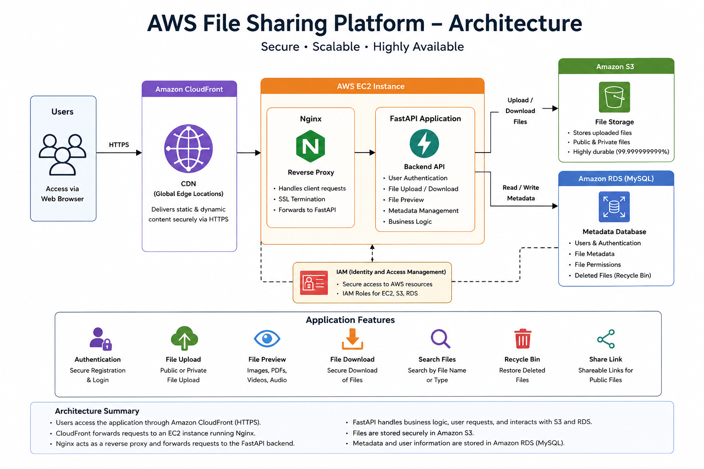
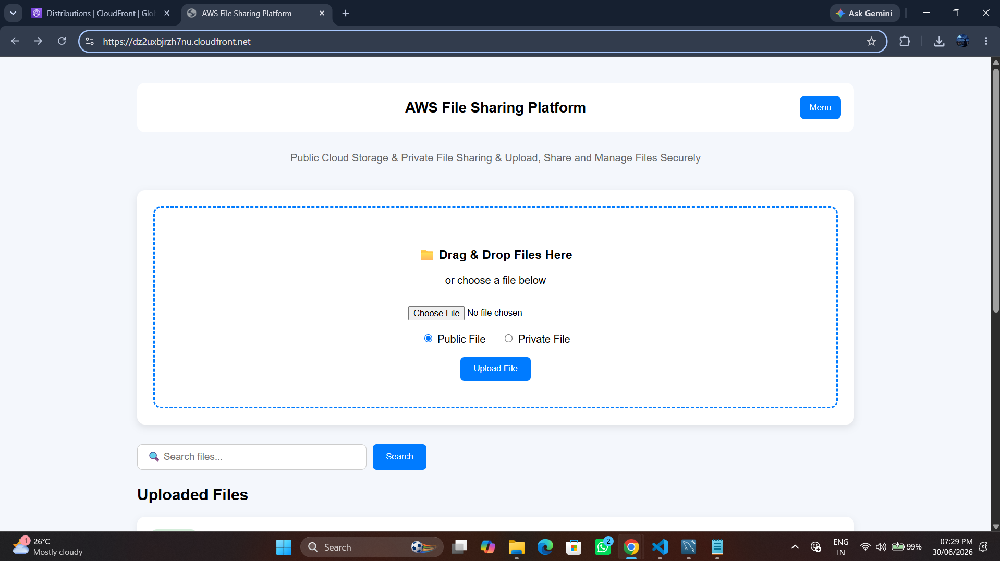
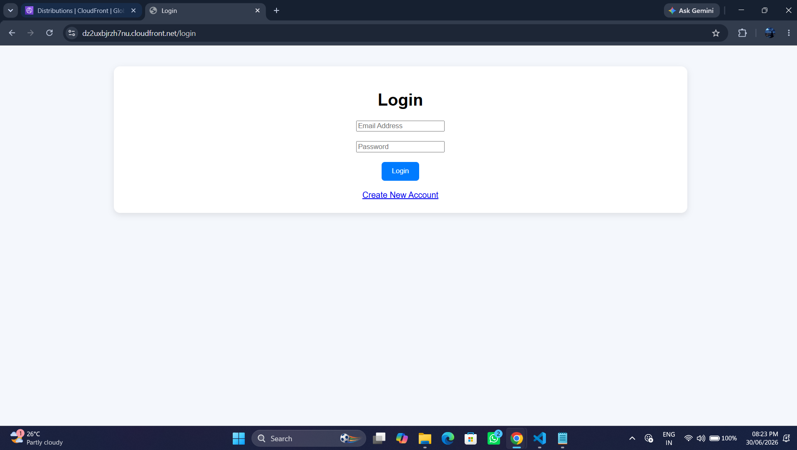
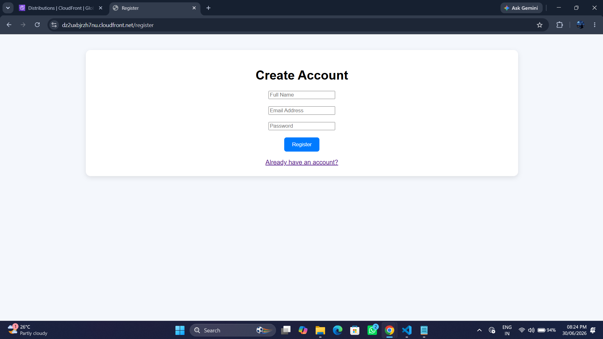
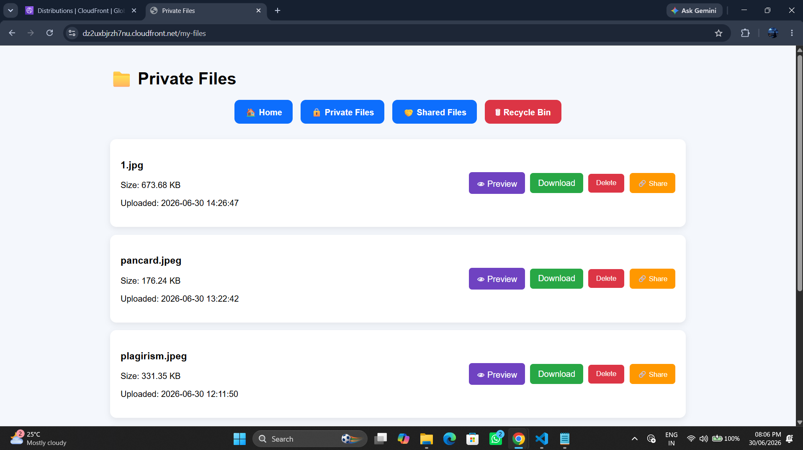
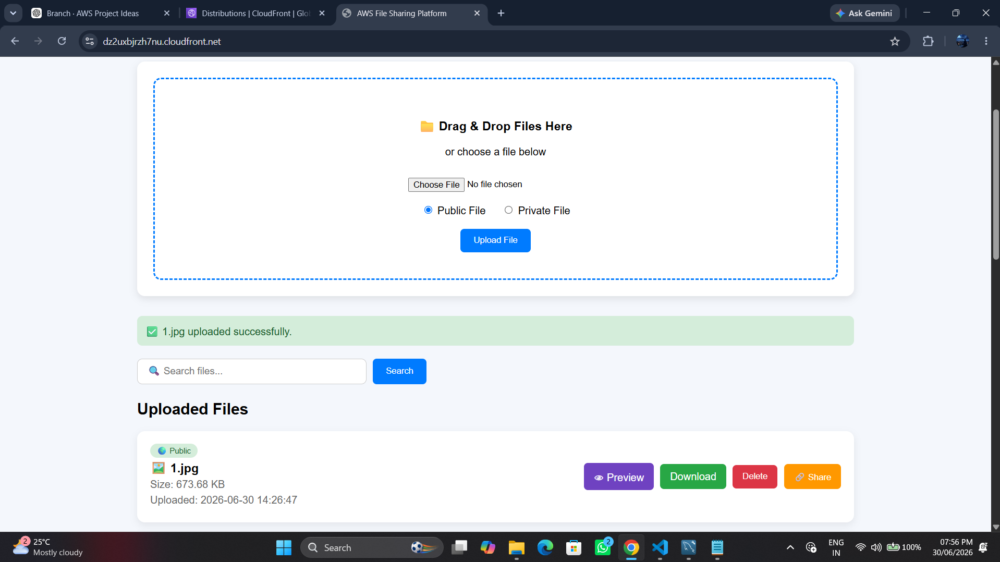
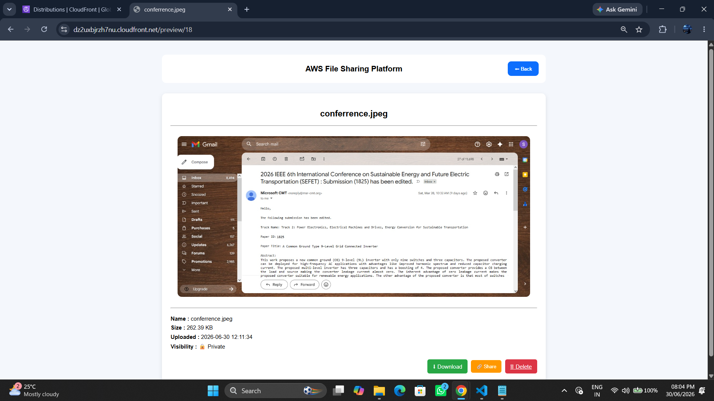

FastAPI • Amazon EC2 • Amazon S3 • Amazon RDS • CloudFront • Nginx
A full-stack file sharing application built using FastAPI and Amazon Web Services. Users can securely upload, preview, download, and manage public and private files. Files were stored in Amazon S3, metadata was maintained in Amazon RDS, and the application was previously deployed on Amazon EC2 with Nginx and CloudFront for content delivery. The AWS hosting environment is currently inactive.
Project source code and implementation details are available on GitHub. Live hosting is currently inactive.
Previously deployed on Amazon EC2 with Nginx, Amazon CloudFront, Amazon S3 and Amazon RDS. The hosting environment is currently inactive.
Supports public and private file uploads with secure authentication and session management.
Designed using a three-tier cloud architecture with scalable storage and secure HTTPS delivery.
Users can upload public or private files through a modern web interface with secure authentication.
Files are securely stored inside Amazon S3 while metadata including filename, size, owner and visibility is stored inside Amazon RDS.
The application was previously hosted on Amazon EC2 using Nginx as a reverse proxy, with Amazon CloudFront used for content delivery. The AWS hosting environment is currently inactive.

The application follows a cloud-native architecture where users access the platform through Amazon CloudFront over HTTPS. Requests are forwarded to Amazon EC2 running Nginx, which serves the FastAPI application. Uploaded files are stored securely in Amazon S3 while user information and file metadata are maintained in Amazon RDS.
Users can upload files as public or private depending on their access requirements.
Session-based authentication protects private uploads and allows users to securely manage their own files.
Supports browser preview for images, PDFs, videos and audio files along with secure download functionality.
Users upload public or private files through the web application.
Files are uploaded to Amazon S3 while metadata is stored in Amazon RDS.
Users can preview, search, download and restore files from the recycle bin after authentication.
Files are securely delivered through Amazon CloudFront over HTTPS.

Main dashboard providing public and private uploads, search functionality, file preview and download management.

Secure authentication allowing registered users to access private files and personalized storage.

New users can create an account by providing their name, email address and password.

Dedicated page for managing private uploads with preview, download and recycle bin functionality.

Successfully uploaded files are immediately available for preview, download and management.

Preview images, PDFs, videos and supported files directly in the browser before downloading.
Integrated Amazon S3 for secure file storage while maintaining metadata in Amazon RDS.
Configured Nginx upload limits to support larger files without HTTP 413 errors.
Configured Amazon CloudFront and resolved AWS WAF restrictions affecting secure uploads.
Previously deployed a secure cloud-native file sharing platform on AWS.
Implemented authentication, public/private uploads, preview, download and recycle bin functionality.
The application was previously deployed using Amazon CloudFront with HTTPS support. The deployment is currently inactive; the source code is available on GitHub.
Hands-on experience with Amazon EC2, Amazon S3, Amazon RDS, Amazon CloudFront, IAM, Nginx, FastAPI, Linux server administration and previous deployment on AWS.
I developed the application flow across the user interface, FastAPI backend, database integration, and file-storage operations. The implementation covers account access, file metadata handling, upload and retrieval flows, and the distinction between public and private file access.
The browser-based interface sends authenticated requests to the FastAPI application. The backend validates requests, coordinates file operations with Amazon S3, and stores related file and user metadata in MySQL through the application data layer. During the earlier deployment, the application was hosted on EC2 behind Nginx, with CloudFront used for content delivery.
A key design consideration was separating file content from file metadata: object storage handles the files, while the relational database stores information needed to organize and retrieve them. The project strengthened my understanding of API design, authentication flows, database integration, object storage, and deployment configuration.